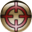
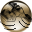

La zone en bas à gauche de l'écran vous renseigne sur le véhicule sélectionné. Si aucun véhicule n'est sélectionné, vous voyez une représentation global de la zone de jeu. Au dessus, chaque bouton correpondent à une action :
|
Valide l'action en cours | |
Annule l'action en cours |
|
Affiche les zones de feu | |
Cache les zones de feu |
|
Affiche/Cache la grille | |
Affiche les informations détaillées |
| Affiche les joueurs connectés | |
Affiche la minimap | |
|
Affiche la vue statégique | Affiche la vue tactique | |
|  | Action de tir | |
Action de contrôle |
|
Réparer une tourelle détruite | |
S'inscrire a une partie |
| Fin du tour |  | Décollage de l'astronef (fin de partie) |